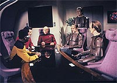
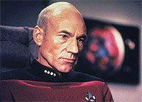
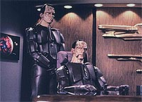
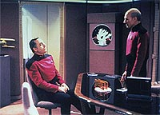

|
MANCHETE
DO EPISDIO
Episdio
introduz com brilhantismo os
Cardassianos
no universo de Jornada
Episdio
anterior | Prximo
episdio
Sinopse:
Data Estelar: 44429.6.
Picard fica chocado quando descobre que uma nave da Federao
renegada, sob o comando do capito Benjamin Maxwell, est
destruindo naves Cardassianas, o que ameaa seriamente a frgil
paz da Federao com o Imprio Cardassiano aps anos de
conflitos.
Com o Cardassiano Gul Macet a bordo, a Enterprise vai de encontro
USS Phoenix, a nave renegada, e testemunha atravs de uma monitorao
de longo alcance a destruio de mais duas naves Cardassianas pelo
capito Maxwell.
 O'Brien,
antigo oficial ttico de Maxwell, acha os atos de seu antigo
comandante difceis de acreditar, pois o capito da Phoenix sempre
foi um exemplo de oficial. Maxwell, segundo ele, deve ter uma razo
muito forte para fazer tais ataques.
Ao encontrar a Phoenix, Picard conversa com Maxwell, que alega ter
evidncias de que os Cardassianos esto transportando armas para
uma base militar --que os Cardassianos dizem ser apenas um posto
cientfico--, a fim de preparar uma ofensiva contra a Federao.
 Picard
acha que mesmo que isso seja verdade, nada justificaria a atitude de
Maxwell. Ele ordena que o capito volte Phoenix e leve sua nave
at uma base da Federao, onde ele ser levado Corte
Marcial.
Durante o caminho, Maxwell tira a Phoenix do curso e intercepta uma
nave Cardassiana. Ele intima Picard a abordar a nave cargueira e
inspecionar seu carregamento, ou ele a destruir. Picard ameaa
atacar a Phoenix, mas O'Brien tem outros planos.
Ele sugere a Picard que o capito autorize sua ida at a Phoenix,
onde ele acredita poder dissuadir Maxwell. Picard concorda e O'Brien
convence seu ex-capito a se render. Maxwell preso e Picard
manda um aviso aos Cardassianos: embora a paz tenha sido preservada,
a Federao estar atenta aos estranhos movimentos de seu novo
"aliado".
Comentrios:
"The Wounded" pode
ser sintetizado em uma s palavra: brilhante. Trata-se de um episdio
que conseguiu trabalhar todas as contingncias envolvendo a produo
de uma srie de televiso --manteve continuidade, sem exigir do
telespectador conhecimento prvio, contou uma bela histria, cheia
de senes e texturas, e trabalhou de forma soberba o enfoque dos
personagens.
A introduo dos Cardassianos na srie, feita por meio deste episdio,
no poderia ter sido melhor. Em vez de optar pela tradicional
abordagem "uma nova raa que nunca vimos, mas j ouvimos
falar", ttica utilizada para a introduo dos Ferengis,
agora descobrimos que a Federao e o Imprio Cardassiano j so
velhos conhecidos.
 Esse
mtodo de introduo a uma nova espcie no s totalmente
factvel (embora nunca tenham sido citados antes, a Federao
bem grande, o que no nos obriga a conhecer todas as espcies que
j tiveram contato com os humanos), como poupa-nos uma srie de
apresentaes desnecessrias e nos joga diretamente no cerne da
questo.
Como alternativa para que saibamos tudo que precisamos sobre os
Cardassianos, os roteiristas optaram por desenvolver mais o histrico
de um personagem j conhecido --Miles O'Brien. Com isso, no s
deram um passado e um contexto bem definido para o engenheiro, como
tambm puderam se aproveitar do gancho deixado no episdio
anterior ("Data's Day"),
em que O'Brien se casa com Keiko Ishikawa. No poderia ter sido
melhor.
A grande contribuio do episdio para o universo de Jornada
nas Estrelas (alm de introduzir uma das raas mais
interessantes e "odiveis" da srie) mostrar facetas
nunca antes vistas da Federao --ele o primeiro episdio a
efetivamente introduzir questes polticas no seriado, algo que
seria intensivamente aproveitado em Deep Space Nine.
Em tempos passados, os oficiais da Frota Estelar tinham como nico
cdigo de conduta a defesa da "justia" --quase como
cavaleiros medievais do futuro. Agora, v-se que tudo isso depende
de um contexto: em casos em que a Federao incapaz de
sustentar um conflito armado, os oficiais so ordenados a varrer a
justia para debaixo do tapete e engolir todos os sapos necessrios.
Isso realismo!
 Alm
disso, o episdio mostra de forma soberba questes sobre a
camaradagem militar --na forma do relacionamento entre O'Brien e
Maxwell-- e sobre o preconceito trazido tona por O'Brien, em seu
confronto com os Cardassianos.
A histria apresentada muito bem elaborada, sem quaisquer furos
no roteiro, apesar de sua complexidade. Algumas cenas so memorveis,
como a em que O'Brien e Maxwell cantam
canes do front, e a concluso no poderia ser mais
empolgante --o dilogo final entre Picard e Gul Macet
sensacional e enfatiza o lado poltico do episdio --diplomacia e
justia definitivamente no chegam ao mesmo lugar.
Esse episdio estabelece muito do contexto que seria usado para a
criao da srie Deep Space Nine e garante o passaporte
para Miles O'Brien tornar-se um personagem importante na histria
de Jornada nas Estrelas.
Citaes:
O'Brien - "It's
not you that I hate, Cardassian. I hate what I became because of you."
("No voc que eu odeio, Cardassiano. Eu odeio o que me
tornei por sua causa.")
Picard - "Take this message to your leaders, Gul Macet: We
are watching."
("Leve essa mensagem a seus lders, Gul Macet: estamos
observando.")
Trivia:
 Neste episdio citado o cdigo para
baixar os escudos de outra nave da Frota, como visto em Jornada
nas Estrelas II.
Neste episdio citado o cdigo para
baixar os escudos de outra nave da Frota, como visto em Jornada
nas Estrelas II.
A
msica irlandesa que O'Brien e Maxwell cantam neste episdio,
chama-se "The Minstrel Boy", de autoria de Thomas Moore.
Esta msica notria do filme "The Man Who Would Be
King".
Marc
Alaimo, que interpreta o primeiro Cardassiano visto em Jornada
nas Estrelas, Gul Macet, mais conhecido como outro
Cardassiano: Gul Dukat, da srie Deep Space Nine. Marc
Alaimo j interpretou na Nova Gerao outros dois aliengenas:
um Antican em "Lonely Among Us"
e um Romulano em "The Neutral
Zone". Ele ainda interpreta um humano no episdio do 6
ano "Time's Arrow". Antes
de Marc Alaimo, apenas um ator havia interpretado trs aliengenas
diferentes em Jornada: Mark Lenard, que fez o Vulcano "Sarek",
um capito Klingon no primeiro filme de Jornada nas Estrelas
para o cinema e um comandante Romulano na Srie Clssica.
O
estranho capacete dos Cardassianos visto aqui no voltar a
aparecer.
Ficha
tcnica:
Histria de Stuart Charno, Sara
Charno e Cy Chermak
Roteiro de Jeri Taylor
Direo de Chip Chalmer
Exibido em 28/01/1991
Produo: 086
Elenco:
Patrick Stewart como
Jean-Luc Picard
Jonathan Frakes como William Thomas Riker
Brent Spiner como Data
LeVar Burton como Geordi La Forge
Michael Dorn como Worf
Gates McFadden como Beverly Crusher
Marina Sirtis como Deanna Troi
Elenco convidado:
Bob Gunton como o
capito Benjamin Maxwell
Rosalind Chao como Keiko Ishikawa O'Brien
Marc Alaimo como Gul Macet
Colm Meaney como Miles Edward O'Brien
Marco Rodriguez como Glinn Telle
Time Winters como Glinn Daro
John Hancock como almirante Haden
Episdio
anterior | Prximo
episdio
|